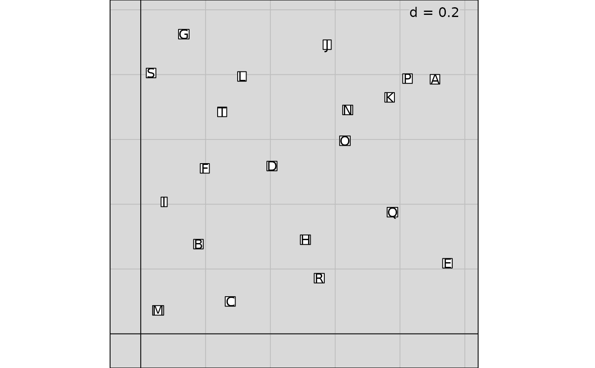
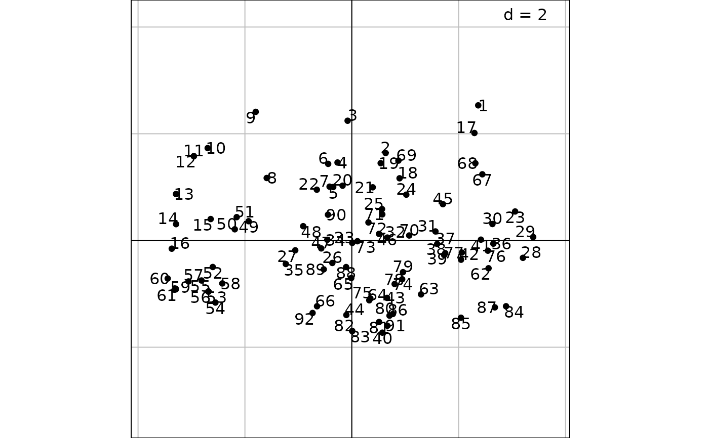
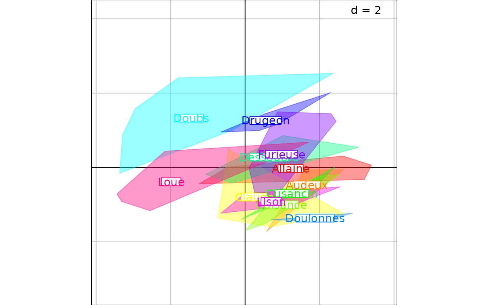

Superpose two graphics
superpose.RdThis function superposes two graphics and extends the graphical constraints of a first graphic to a second one.
Arguments
- g1
an object of class
ADEg,ADEgSortrellis- g2
an object of class
ADEg,ADEgSortrellissuperposed ong1- e1
an object of class
ADEgorADEgS- e2
an object of class
ADEgorADEgSsuperposed one1- which
if
g1is anADEgS, whichADEgis used as the base of superposition (g2is superposed ong1[[which]])- plot
a logical indicating if the graphics is displayed
Details
The created ADEgS object is a layout of two graphical objects.
Each of the two objects superposed still have its graphical parameters in the created layout.
However, the ADEgS displayed favour the graphical parameters of the object below :
displayed limits, grid, legend and axes are those of g1 (respectively e1) and g2
(respectively e2) has transparent background and labels' boxes.
The superpose method is defined for:
signature(g1 = "ADEgS", g2 = "ADEg", which = "numeric", plot = "logical")signature(g1 = "ADEgS", g2 = "ADEg", which = "numeric", plot = "ANY")signature(g1 = "ADEgS", g2 = "ADEg", which = "missing", plot = "ANY"): Ifwhichismissing, the lastADEgofg1@ADEglistis used as the base of superposition. In that case,which = length(g1)signature(g1 = "ADEgORtrellis", g2 = "ADEgORtrellis", which = "ANY", plot = "ANY"): Ifg1is anADEgobject, nowhichis needed.signature(g1 = "ADEgS", g2 = "ADEgS", which = "missing", plot = "ANY")
The + method is defined for:
signature(e1 = "ADEg", e2 = "ADEg"): superpose e2 on e1signature(e1 = "ADEg", e2 = "ADEgS"): superpose e2 to e1signature(e1 = "ADEgS", e2 = "ADEg"): calls the+method with signature(e1 = "ADEg", e2 = "ADEgS").
Author
Alice Julien-Laferriere, Aurelie Siberchicot aurelie.siberchicot@univ-lyon1.fr and Stephane Dray
Examples
cha <- LETTERS[1:20]
xy <- cbind.data.frame(runif(length(cha)), runif(length(cha)))
g1 <- s.label(xy, labels = cha, ppoints.alpha = 0, pbackground.col = "grey85")

g2 <- s.label(xy, labels = cha, plabels.cex = 0, paxes.draw = TRUE, ppoints.pch = 4,
ppoints.col = "red")
g3 <- superpose(g1, g2, plot = TRUE)
g4 <- superpose(g2, g1, plot = TRUE)
data(jv73, package = "ade4")
pca1 <- ade4::dudi.pca(jv73$morpho, scannf = FALSE)
g5 <- s.label(pca1$li, plabels.optim = TRUE)

g6 <- s.class(pca1$li, jv73$fac.riv, starSize = 0, ellipseSize = 0, chullSize = 1,
ppolygons.alpha = 0.4, col = rainbow(12), ppoints.cex = 0)

g5 + g6
if (FALSE) g7 <- s.label(pca1$li, plabels.optim = TRUE, facets = jv73$fac.riv, plot = FALSE)
g8 <- s.class(pca1$li, jv73$fac.riv, facets = jv73$fac.riv, starSize = 0, chullSize = 1,
ellipseSize = 0, ppolygons.alpha = 0.4, col = rainbow(12), ppoints.cex = 0, plot = FALSE)
#> Error in multi.facets.S2(thecall, sortparameters$adepar, samelimits = sortparameters$g.args$samelimits): object 'pca1' not found
g9 <- superpose(g7, g8, plot = TRUE)
#> Error in h(simpleError(msg, call)): error in evaluating the argument 'g1' in selecting a method for function 'superpose': object 'g7' not found
# \dontrun{}